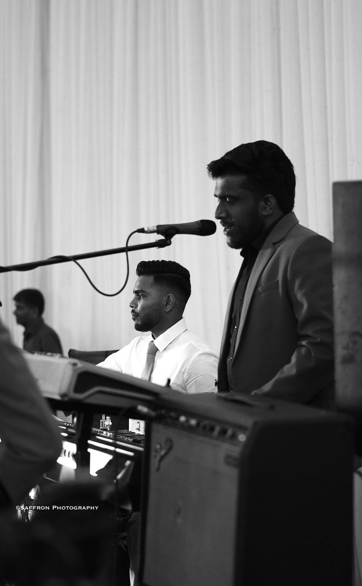
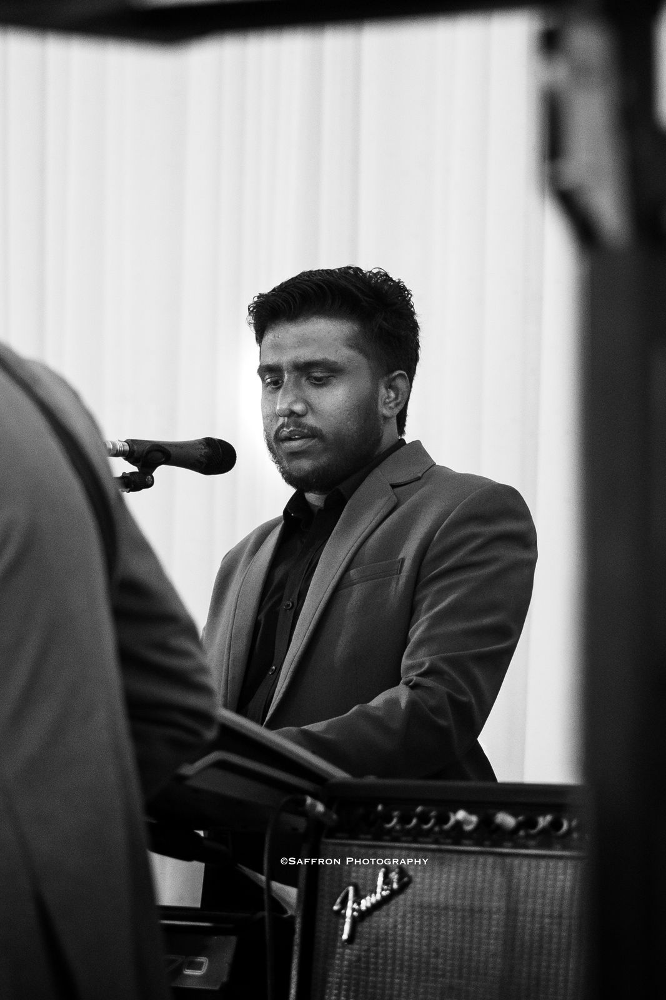
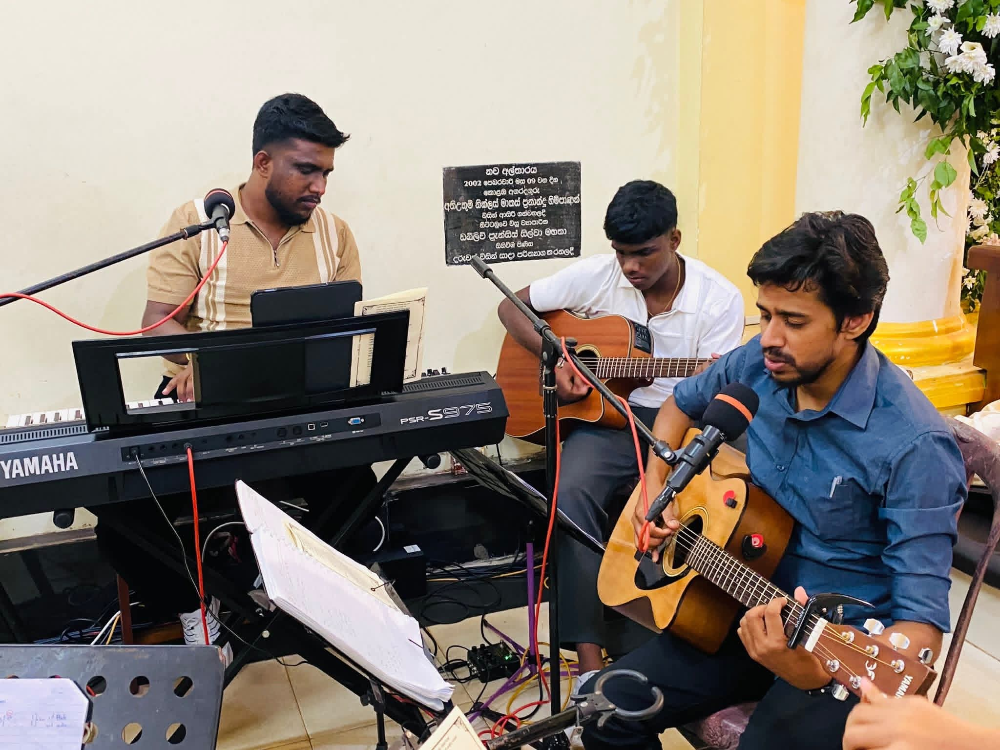

As a passionate pianist and vocalist, music has been a core part of my life for over five years. I believe that the same qualities that make a great programmer — patience, attention to detail, and creative problem-solving — are exactly what music demands.
My musical journey started with classical piano training and evolved into contemporary styles, vocal performance, and original composition. Music gives me the perfect creative counterbalance to my technical academic life.
"Music and mathematics are not opposites — they are the same language spoken differently."
— A philosophy I live byPiano
Classical & contemporary, 5+ years
Vocals
Lead vocalist, soulful style
Composition
Writing original melodies
Arrangement
Harmonizing and layering sounds
Genres & Styles
Classical
Piano foundations
Contemporary
Modern pop & ballads
Jazz
Improvisation & chords
Gospel
Worship & soul
Sinhala
Local music & culture
Choir & Band Memberships / Affiliations
Western Band Member
St. Peter's College, Colombo - 04
Actively contributed and performed as a dedicated member of the Western Band, building strong instrumental foundations and ensemble discipline.

College Choir Member
St. Peter's College, Colombo - 04
Developed vocal techniques and choral harmony skills through participation in school liturgical and secular choir productions.

Pianist & Chorister
St. Anthony's Church, Nittambuwa
Serving continuously as a pianist and chorister, accompanying liturgical services and enriching the spiritual atmosphere with instrumental and vocal ability.

Chorister
Archdiocese of Colombo Choir
Singing and ministering as a chorister in the Archdiocesan Choir, performing at major canonical and community-wide religious events.
Leader & Keyboardist
RHYTHMS (Music Band)
Leading and performing as the keyboardist for the band RHYTHMS, managing musical arrangements and live performances.